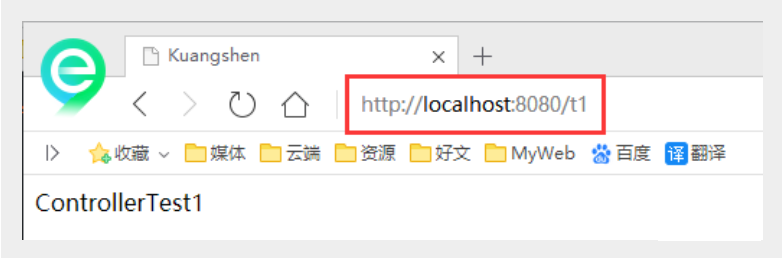
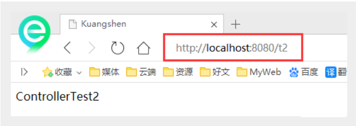
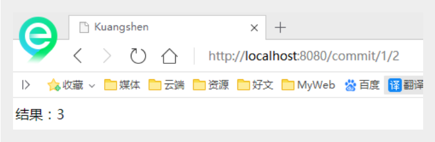
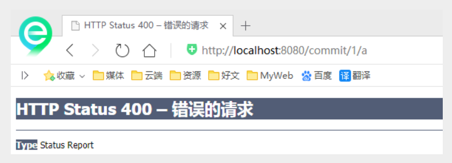
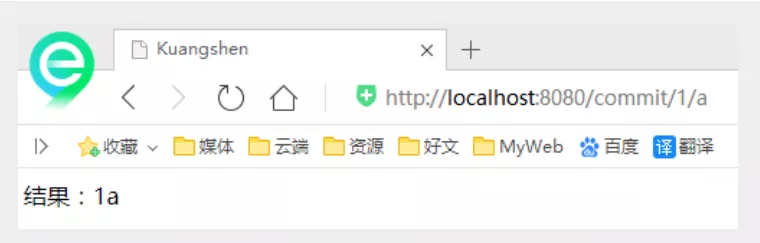
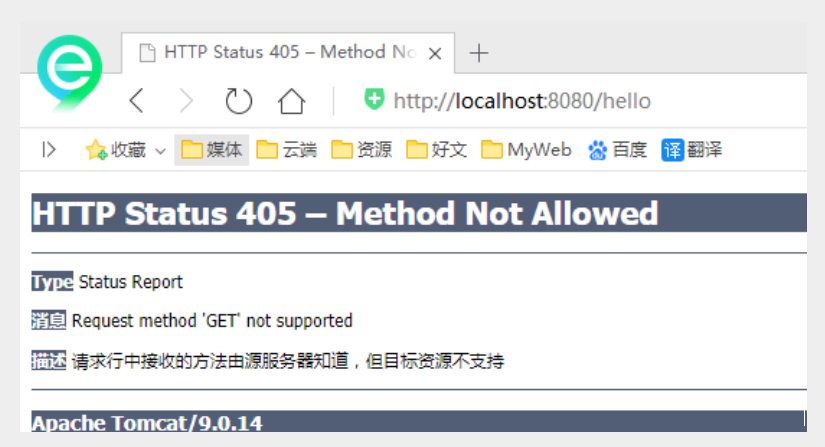
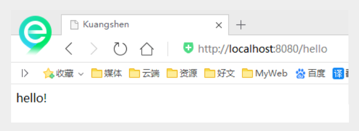

控制器Controller
控制器Controller
- 控制器复杂提供访问应用程序的行为，通常通过接口定义或注解定义两种方法实现。
- 控制器负责解析用户的请求并将其转换为一个模型。
- 在Spring MVC中一个控制器类可以包含多个方法
- 在Spring MVC中，对于Controller的配置方式有很多种
实现Controller接口
Controller是一个接口，在org.springframework.web.servlet.mvc包下，接口中只有一个方法；
//实现该接口的类获得控制器功能
public interface Controller {
//处理请求且返回一个模型与视图对象
ModelAndView handleRequest(HttpServletRequest var1, HttpServletResponse var2) throws Exception;
}
测试
新建一个Moudle.
- 删掉HelloController
- mvc的配置文件只留下 视图解析器！
编写一个Controller类，ControllerTest1
//定义控制器 //注意点：不要导错包，实现Controller接口，重写方法； public class ControllerTest1 implements Controller { public ModelAndView handleRequest(HttpServletRequest httpServletRequest, HttpServletResponse httpServletResponse) throws Exception { //返回一个模型视图对象 ModelAndView mv = new ModelAndView(); mv.addObject("msg","Test1Controller"); mv.setViewName("test"); return mv; } }编写完毕后，去Spring配置文件中注册请求的bean；name对应请求路径，class对应处理请求的类
<bean name="/t1" class="com.lg.controller.ControllerTest1"/>编写前端test.jsp，注意在WEB-INF/jsp目录下编写，对应我们的视图解析器
<%@ page contentType="text/html;charset=UTF-8" language="java" %> <html> <head> <title>lg</title> </head> <body> ${msg} </body> </html>配置Tomcat运行测试，我这里没有项目发布名配置的就是一个 / ，所以请求不用加项目名，OK！

说明：
- 实现接口Controller定义控制器是较老的办法
- 缺点是：一个控制器中只有一个方法，如果要多个方法则需要定义多个Controller；定义的方式比较麻烦；
使用注解@Controller
@Controller注解类型用于声明Spring类的实例是一个控制器；
Spring可以使用扫描机制来找到应用程序中所有基于注解的控制器类，为了保证Spring能找到你的控制器，需要在配置文件中声明组件扫描。
<!-- 自动扫描指定的包，下面所有注解类交给IOC容器管理 --> <context:component-scan base-package="com.lg.controller"/>增加一个ControllerTest2类，使用注解实现；
//@Controller注解的类会自动添加到Spring上下文中 @Controller public class ControllerTest2{ //映射访问路径 @RequestMapping("/t2") public String index(Model model){ //Spring MVC会自动实例化一个Model对象用于向视图中传值 model.addAttribute("msg", "ControllerTest2"); //返回视图位置 return "test"; } }运行tomcat测试

可以发现，我们的两个请求都可以指向一个视图，但是页面结果的结果是不一样的，从这里可以看出视图是被复用的，而控制器与视图之间是弱偶合关系。
注解方式是平时使用的最多的方式！RequestMapping
@RequestMapping
@RequestMapping注解用于映射url到控制器类或一个特定的处理程序方法。可用于类或方法上。用于类上，表示类中的所有响应请求的方法都是以该地址作为父路径。
为了测试结论更加准确，我们可以加上一个项目名测试 myweb
只注解在方法上面
@Controller public class TestController { @RequestMapping("/h1") public String test(){ return "test"; } }访问路径：http://localhost:8080 / 项目名 / h1
同时注解类与方法
@Controller @RequestMapping("/admin") public class TestController { @RequestMapping("/h1") public String test(){ return "test"; } }访问路径：http://localhost:8080 / 项目名/ admin /h1 , 需要先指定类的路径再指定方法的路径；
RestFul 风格
概念
Restful就是一个资源定位及资源操作的风格。不是标准也不是协议，只是一种风格。基于这个风格设计的软件可以更简洁，更有层次，更易于实现缓存等机制。
功能
资源：互联网所有的事物都可以被抽象为资源
资源操作：使用POST、DELETE、PUT、GET，使用不同方法对资源进行操作。
分别对应 添加、 删除、修改、查询。
传统方式操作资源 ：通过不同的参数来实现不同的效果！方法单一，post 和 get
http://127.0.0.1/item/queryItem.action?id=1 查询,GET
http://127.0.0.1/item/saveItem.action 新增,POST
http://127.0.0.1/item/updateItem.action 更新,POST
http://127.0.0.1/item/deleteItem.action?id=1 删除,GET或POST
使用RESTful操作资源 ：可以通过不同的请求方式来实现不同的效果！如下：请求地址一样，但是功能可以不同！
http://127.0.0.1/item/1 查询,GET
http://127.0.0.1/item 新增,POST
http://127.0.0.1/item 更新,PUT
http://127.0.0.1/item/1 删除,DELETE
学习测试
在新建一个类 RestFulController
@Controller public class RestFulController { }在Spring MVC中可以使用 @PathVariable 注解，让方法参数的值对应绑定到一个URI模板变量上。
@Controller public class RestFulController { //映射访问路径 @RequestMapping("/commit/{p1}/{p2}") public String index(@PathVariable int p1, @PathVariable int p2, Model model){ int result = p1+p2; //Spring MVC会自动实例化一个Model对象用于向视图中传值 model.addAttribute("msg", "结果："+result); //返回视图位置 return "test"; } }测试请求查看下

使用路径变量的好处？
使路径变得更加简洁；
获得参数更加方便，框架会自动进行类型转换。
通过路径变量的类型可以约束访问参数，如果类型不一样，则访问不到对应的请求方法，如这里访问是的路径是/commit/1/a，则路径与方法不匹配，而不会是参数转换失败。

我们来修改下对应的参数类型，再次测试
//映射访问路径 @RequestMapping("/commit/{p1}/{p2}") public String index(@PathVariable int p1, @PathVariable String p2, Model model){ String result = p1+p2; //Spring MVC会自动实例化一个Model对象用于向视图中传值 model.addAttribute("msg", "结果："+result); //返回视图位置 return "test"; }
使用method属性指定请求类型
用于约束请求的类型，可以收窄请求范围。指定请求谓词的类型如GET, POST, HEAD, OPTIONS, PUT, PATCH, DELETE, TRACE等
我们来测试一下：
增加一个方法
//映射访问路径,必须是POST请求 @RequestMapping(value = "/hello",method = {RequestMethod.POST}) public String index2(Model model){ model.addAttribute("msg", "hello!"); return "test"; }我们使用浏览器地址栏进行访问默认是Get请求，会报错405：

如果将POST修改为GET则正常了；
//映射访问路径,必须是Get请求 @RequestMapping(value = "/hello",method = {RequestMethod.GET}) public String index2(Model model){ model.addAttribute("msg", "hello!"); return "test"; }
小结：
Spring MVC 的 @RequestMapping 注解能够处理 HTTP 请求的方法, 比如 GET, PUT, POST, DELETE 以及 PATCH。
所有的地址栏请求默认都会是 HTTP GET 类型的。
方法级别的注解变体有如下几个：组合注解
@GetMapping
@PostMapping
@PutMapping
@DeleteMapping
@PatchMapping
@GetMapping 是一个组合注解，平时使用的会比较多！
它所扮演的是 @RequestMapping(method =RequestMethod.GET) 的一个快捷方式。
转载请注明来源，欢迎对文章中的引用来源进行考证，欢迎指出任何有错误或不够清晰的表达。可以在下面评论区评论，也可以邮件至 1589631311@qq.com